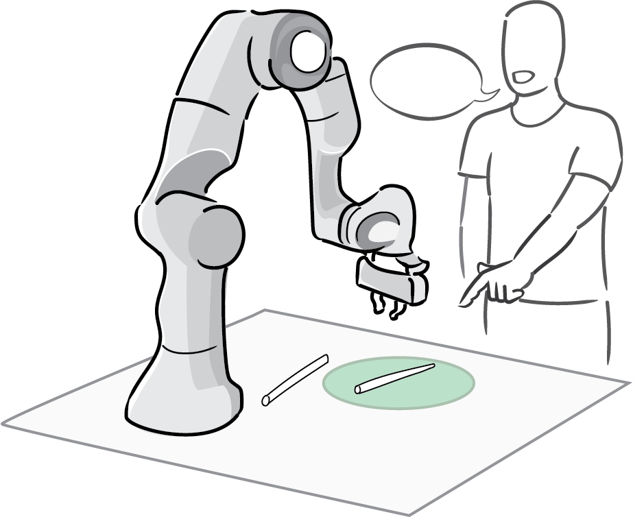
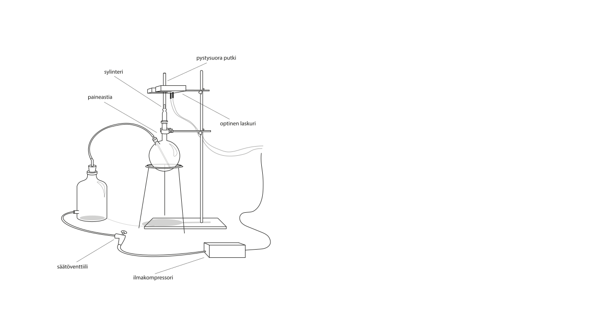
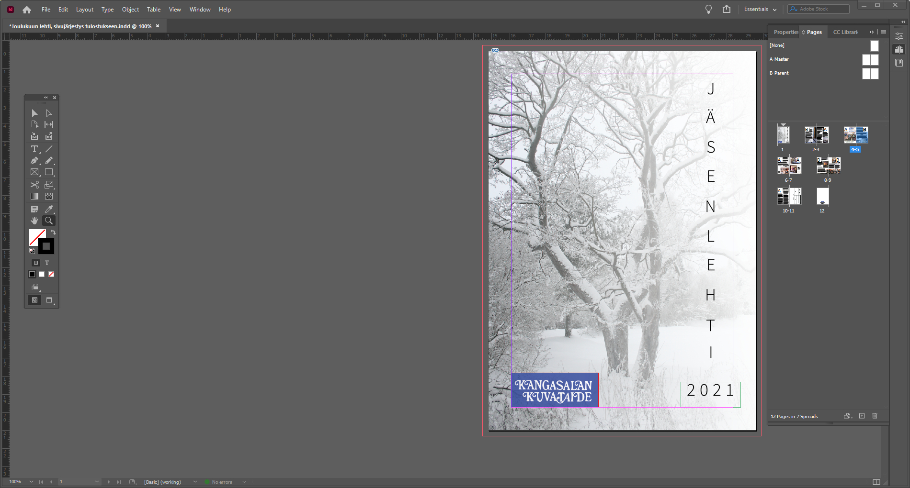

PORTFOLIO
by NMKsas
Ro-Man 2025: Evaluating Pointing Gestures for Target Selection in Human-Robot Collaboration
The paper was written in collaboration with Roel Pieters and it was accepted to 34th IEEE International Conference on Robot and Human Interactive Communication (RO-MAN).

Finland in Watercolor
A charity art project created during 2017 in honor of Finland's 100th birthday

Technical illustrations with Adobe Illustrator
During my studies I have relied on Adobe Illustrator to create sharp and accurate vector art for several laboratory reports. I value high quality in visual details.

Magazines with Adobe InDesign
In the past I have created some magazines for a local art organization, Kangasalan Kuvataiteen Ystävät ry using Adobe InDesign
